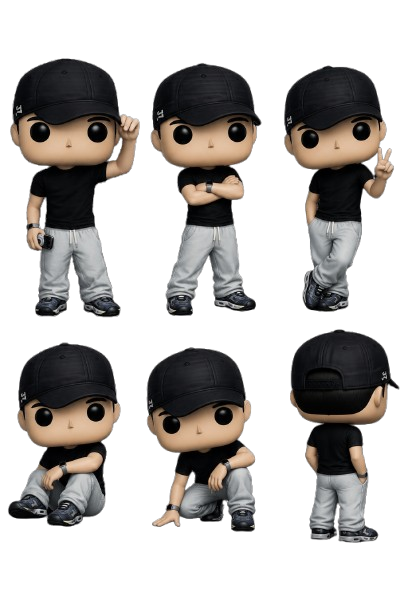
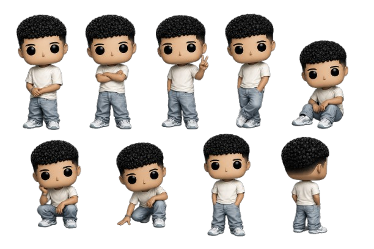
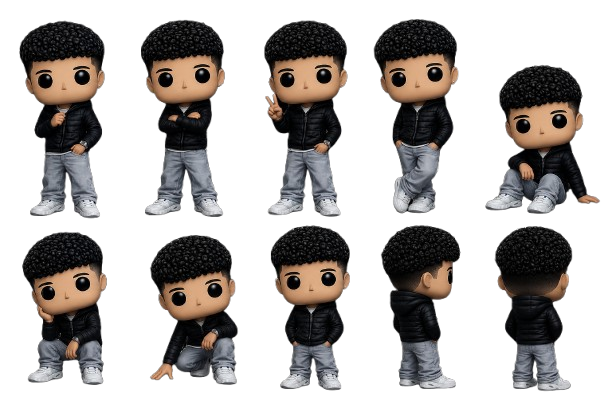
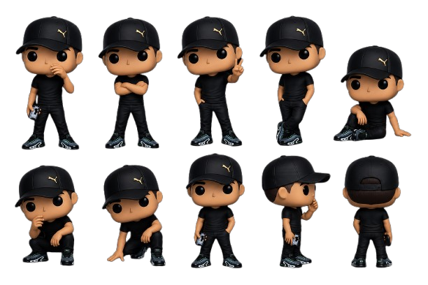
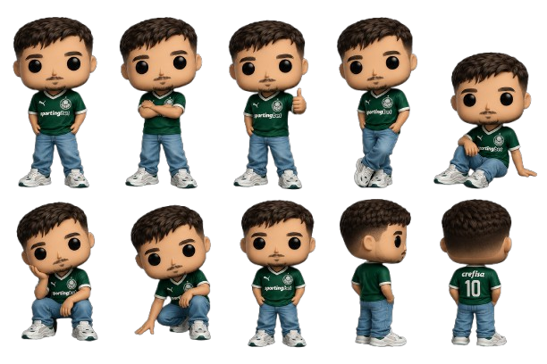

Encontre inspiração de outfits
Street é um termo usado para se referir à cultura urbana, que envolve moda, música, arte e estilo de vida das ruas. Está ligado à expressão pessoal e à criatividade no ambiente das cidades, influenciando jovens no mundo todo.

Sneaker é um termo usado para se referir aos sapatos de tênis, que combinam conforto e estilo. São populares entre os jovens e são frequentemente usados em contextos casuais e esportivos.

Techwear é um estilo de moda que combina funcionalidade e estética futurista. Caracteriza-se por roupas e acessórios feitos com materiais tecnológicos, projetados para oferecer conforto, proteção e um visual moderno.

Casual Luxe é um estilo de moda que combina elementos casuais com toques de luxo. Caracteriza-se por peças confortáveis e descontraídas, mas com detalhes sofisticados e materiais de alta qualidade.

Formal Edge é um estilo de moda que combina elementos formais com um toque moderno e ousado. Caracteriza-se por peças clássicas, como ternos e vestidos, mas com cortes, cores ou detalhes que adicionam um toque de originalidade e personalidade.
